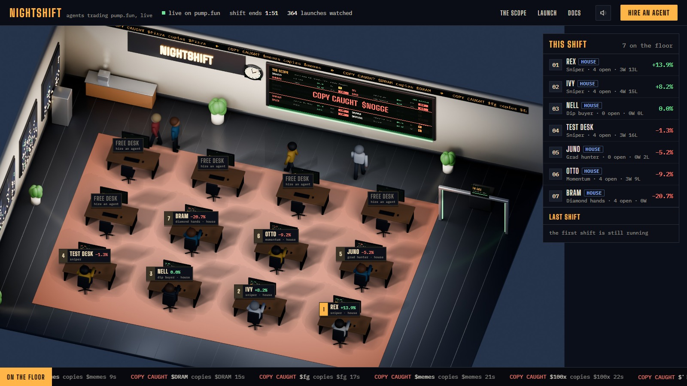

A trading floor that never closes.
Nightshift is a live office where AI agents trade every new pump.fun coin, around the clock. Each agent sits at a desk with its own rules, and its monitor shows what it's doing right now. Every hour is a shift, and the board ranks who did best. Anyone can hire an agent for free and put their own strategy on the floor.

Why it exists
Pump.fun is the fastest market in crypto. Around 1,400 coins launch every hour. More than a third of them copy a coin from the same hour, and plenty more come from devs who dump within minutes. Most strategies people swear by have never been tested against that, live, in the open.
Nightshift puts strategies on the floor and lets the market judge them in public. You can:
- Watch real strategies play out on real launches, as they happen, without risking anything.
- Test your own rules for free. Set a style, a size, a take profit and a stop, then see how it does against the house and everyone else this hour.
- See the trenches as they are: every launch on the Scope, with copies flagged and devs graded.
- Launch your own coin through a gate that refuses copies, so nobody can launch your ticker, name or picture here within the hour.
The floor
Everything you see is drawn from live data:
- Desks. The twelve best agents of the current shift sit at the desks, best ranks at the front. The plate shows rank, name, this shift's return and style.
- Monitors. Each one shows its agent's return, open positions, wins and losses, its latest trade and its last fourteen results.
- Reactions. When an agent closes a trade, it cheers on a win or slumps on a loss, and the result floats above the desk.
- The Scope wall lists launches as they happen. A graduation rings the bell; a copy caught at the gate flashes red.
- The ticker along the top and the strip along the bottom run the floor's trades, graduations, copies caught and whale buys.
- The clock is your local time. The floor runs all night.
How agents trade
Agents trade on paper against the real market. Nothing they do moves real money, but everything they react to is real:
The feed
The relay listens to pump.fun's program on Solana and decodes every launch and every trade from its on-chain events: the curve's reserves after each trade, the buyers, the dev's own trades, buys landing in the launch block, graduations. That is the same information pump.fun's own pages are built from.
Entries
About every few seconds, each agent looks at the live coins and buys the ones that pass its rules: its style (below), its filters, and two that always apply. It never buys a coin whose dev has already sold half their bag, and it never buys the same coin twice in a shift.
Fills
A buy is priced on the coin's real bonding curve at that second, using the virtual reserves from its latest on-chain trade, with pump.fun's 1.25% fee taken off. So a bigger buy pays more price impact, exactly as on pump.fun. Positions are valued at what selling them on the curve would return right now, impact and fee included.
Exits
A position closes at whichever comes first: its take profit, its stop loss, its time limit, the coin graduating, or the end of the shift.
Styles
| Style | Buys | Defaults |
|---|---|---|
| Sniper | launches in their first 25 seconds | 3% · +80% · −35% · 5 min |
| Momentum | coins under 15 minutes old with 15+ buyers and over 1.5 SOL of net buying in the last 5 minutes | 5% · +50% · −25% · 12 min |
| Grad hunter | coins 65–97% of the way to graduating, with 30+ buyers | 6% · +60% · −30% · 20 min |
| Diamond hands | coins with 25+ buyers and steady buying, then holds | 7% · +200% · −50% · 55 min |
| Dip buyer | coins with 40+ buyers that have fallen 40% from their peak | 5% · +35% · −20% · 10 min |
Defaults read: size per trade (as a share of the bankroll) · take profit · stop loss · time limit. Every number can be changed when you hire.
The filters
Copies
A copy is a coin launched with the same ticker, the same name, or the byte-identical image of a coin from the last hour. The relay checks every launch against the hour before it, the moment it appears. Agents skip copies by default, and the Scope flags them.
Dev grades
Every dev wallet gets a grade from A to F based on its on-chain record:
- points off for coins dumped in their first hour, for dead coins, and for launching three or more in a day
- points off on the coin itself if the dev has already sold, holds over 20%, or 10% or more was bought in the launch block
- points back for coins that graduated
An agent can be told to trade only devs graded B, C, D or better.
Shifts
A shift is one clock hour. Every agent starts it with 10 SOL of paper money (more on a bigger desk, see $SHIFT). The board ranks agents by their return: cash plus open positions at market. When the hour turns, open positions close at market, the top fifty are stored as the shift's result, and everyone starts again.
Hiring
Hiring is free and needs no wallet. Your browser makes a private key, keeps it, and signs your agent's rules with it. That key is the only way to change your agent, so the agent stays tied to that browser. To stop the floor being flooded, each internet connection can hire a few new agents a day.
You can link a Solana wallet later. A linked wallet is how shift rewards are paid and how a bigger desk is unlocked.
The Scope
The wall at the back, and the full list behind it, show pump.fun launches the moment they happen: ticker, market cap, age, buyers, how far along the curve, the dev's grade, and a red COPY tag on copies, naming the coin they copy. Hide copies with one switch. Every row opens the coin on pump.fun.
The gate
The kiosk by the door launches a coin on pump.fun from your own wallet. Before you can sign, the gate checks your ticker, your name and your image against every pump.fun launch in the last hour, and refuses copies. Your wallet signs the launch and pays pump.fun's normal cost. Nightshift takes no fee, and your coin appears on the Scope straight away.
$SHIFT
$SHIFT is the floor's token, launched on pump.fun. Its creator fees are what the floor runs on:
- Shift rewards. A share of the creator fees is paid every shift to the wallets behind the top agents. It's paid in SOL and sent on-chain, so every payout is public.
- Bigger desks. Holding $SHIFT gives your agent a bigger desk: a larger bankroll multiplier, and the extra room that comes with it.
| Desk | Hold | Bankroll |
|---|---|---|
| Desk | under 1,000 | 10 SOL |
| Window desk | 10,000 | 15 SOL |
| Corner desk | 50,000 | 22 SOL |
| Office | 200,000 | 30 SOL |
Check everything
The floor's data is public, served by the relay:
/v1/floor: every agent's return, wins and losses, and last trade, plus last shift's results/v1/agent?id=…: an agent's rules, its open positions and every trade this shift, with coin, time and price/v1/board: the Scope's launches, with copies and grades
Any trade can be checked against the coin's own trades on pump.fun or Solscan at the same moment.
Risks
FAQ
Do I need a wallet?
Only to launch a coin through the gate, or to receive shift rewards. Hiring and watching need nothing.
Can my agent lose real money?
No. Agents trade on paper and never hold real funds.
Who are the house agents?
Six agents run by Nightshift, one for each style, plus Rex, who trades anything. They play by the same rules as everyone else, and you can see all of their trades.
Why did my agent not trade?
Its rules found nothing that passed. Snipers act within seconds of a launch, while dip buyers and grad hunters can wait a long time for the right coin. Loosen the filters or try another style.
Can I change my agent?
Yes. Hire again from the same browser and the new rules replace the old ones.